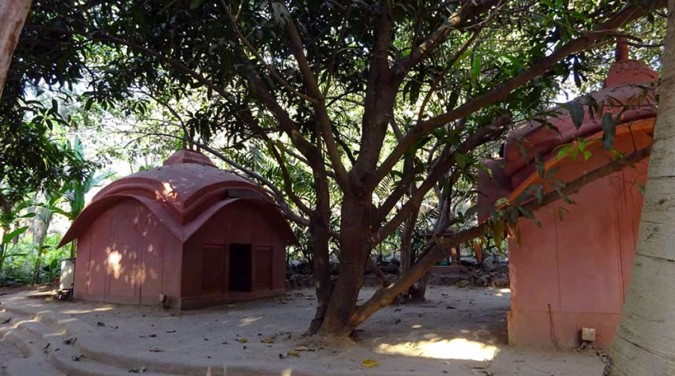

<section class="prabhupad_Room">
  <div class="container">

    <figure class="prabhupad_Room-img">
      
    </figure>

    <div class="room-wapper">
      <div class="more_quotes-slids">
        <!-- <span>"</span>
        <strong>In my room at Radha-Damodara you should keep one photo of me, and offer it prasadam of Sri Sri Radha
          Damodara</strong> -->

      </div>
      <div class="about_room">
        <h5>Roop Goswami Samadhi </h5>
        <p>Srila Roop Goswami entered samadhi in the year 1564, and his sacred body was entombed here next to his
          bhajana kutira, by his beloved disciple and nephew Jiva.</p>
        <p>
          <strong class="d-block">Bhajan kutir</strong>
          On his arrival in Vrindavana, Srila Roop Goswami chose this spot in the sacred garden of Seva Kunja near the
          banks of the Yamuna to perform his bhajana and rest beneath the trees at night. This spot in Seva Kunja
          eventually became his ‘de facto’ headquarters, where he would hold meetings with the other Srimad and where he
          held discourses on Shrimad Bhagavatama and other Vaishnava literatures. It was also here where he wrote many
          of his important books including the great Vaishnava classic Bhakti-rasamritasindhu, the Nectar of Devotion,
          which he completed in 1541. Within time, a simple attached cottage was built for Roop Goswami where he could
          keep his parchment leaves and other items used for writing books.</p>
      </div>
    </div>

  </div>
</section>
